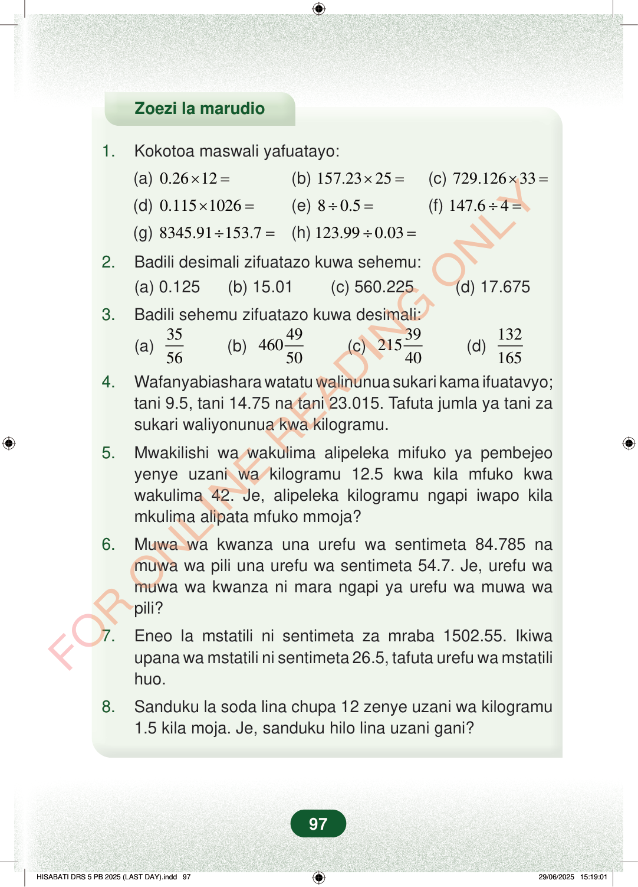

Zoezi la marudio1.Kokotoa maswali yafuatayo:(a)0.2612×=(b)157.2325×=(c)729.12633×=(d)0.1151026×=(e)80.5÷=(f)147.64÷=(g)8345.91153.7÷=(h)123.990.03÷=2.Badili desimali zifuatazo kuwa sehemu:(a) 0.125 (b) 15.01 (c) 560.225 (d) 17.6753.Badili sehemu zifuatazo kuwa desimali:(a)3556(b)49460 50(c)39215 40(d)1321654.Wafanyabiashara watatu walinunua sukari kama ifuatavyo;tani 9.5, tani 14.75 na tani 23.015. Tafuta jumla ya tani zasukari waliyonunua kwa kilogramu.5.Mwakilishi wa wakulima alipeleka mifuko ya pembejeoyenye uzani wa kilogramu 12.5 kwa kila mfuko kwawakulima 42. Je, alipeleka kilogramu ngapi iwapo kilamkulima alipata mfuko mmoja?6.Muwa wa kwanza una urefu wa sentimeta 84.785 namuwa wa pili una urefu wa sentimeta 54.7. Je, urefu wamuwa wa kwanza ni mara ngapi ya urefu wa muwa wapili?7.Eneo la mstatili ni sentimeta za mraba 1502.55. Ikiwaupana wa mstatili ni sentimeta 26.5, tafuta urefu wa mstatilihuo.8.Sanduku la soda lina chupa 12 zenye uzani wa kilogramu1.5 kila moja. Je, sanduku hilo lina uzani gani?97
Zoezi la marudio
1. Kokotoa maswali yafuatayo:
(a) 0.26 12 × = (b) 157.23 25 × = (c) 729.126 33 × =
(d) 0.115 1026 × = (e) 8 0.5 ÷ = (f) 147.6 4 ÷ =
(g) 8345.91 153.7 ÷ = (h) 123.99 0.03 ÷ =
2. Badili desimali zifuatazo kuwa sehemu: (a) 0.125 (b) 15.01 (c) 560.225 (d) 17.675
3. Badili sehemu zifuatazo kuwa desimali:
(a) 35
56 (b) 49 460 50 (c) 39 215 40 (d) 132 165 4. Wafanyabiashara watatu walinunua sukari kama ifuatavyo; tani 9.5, tani 14.75 na tani 23.015. Tafuta jumla ya tani za sukari waliyonunua kwa kilogramu.
5. Mwakilishi wa wakulima alipeleka mifuko ya pembejeo yenye uzani wa kilogramu 12.5 kwa kila mfuko kwa wakulima 42. Je, alipeleka kilogramu ngapi iwapo kila mkulima alipata mfuko mmoja?
6. Muwa wa kwanza una urefu wa sentimeta 84.785 na muwa wa pili una urefu wa sentimeta 54.7. Je, urefu wa muwa wa kwanza ni mara ngapi ya urefu wa muwa wa pili?
7. Eneo la mstatili ni sentimeta za mraba 1502.55. Ikiwa upana wa mstatili ni sentimeta 26.5, tafuta urefu wa mstatili huo.
8. Sanduku la soda lina chupa 12 zenye uzani wa kilogramu 1.5 kila moja. Je, sanduku hilo lina uzani gani?
97
Zoezi la marudio1.Kokotoa maswali yafuatayo:(a) 0.26 × 12 =(b) 157.23 × 25 =(c) 729.126 × 33 =(d) 0.115 × 1026 =(e) 8 ÷ 0.5 =(f) 147.6 ÷ 4 =(g) 8345.91 ÷ 153.7 =(h) 123.99 ÷ 0.03 =2.Badili desimali zifuatazo kuwa sehemu:(a) 0.125(b) 15.01(c) 560.225(d) 17.6753.Badili sehemu zifuatazo kuwa desimali:<math><mfrac><mn>35</mn><mn>56</mn></mfrac></math><math><mrow><mn>460</mn><mfrac><mn>49</mn><mn>50</mn></mfrac></mrow></math><math><mrow><mn>215</mn><mfrac><mn>39</mn><mn>40</mn></mfrac></mrow></math><math><mfrac><mn>132</mn><mn>165</mn></mfrac></math>4.Wafanyabiashara watatu walinunua sukari kama ifuatavyo; tani 9.5, tani 14.75 na tani 23.015.Tafuta jumla ya tani za sukari waliyonunua kwa kilogramu.5.Mwakilishi wa wakulima alipeleka mifuko ya pembejeo yenye uzani wa kilogramu 12.5 kwa kila mfuko kwa wakulima 42.Je, alipeleka kilogramu ngapi iwapo kila mkulima alipata mfuko mmoja?6.Muwa wa kwanza una urefu wa sentimeta 84.785 na muwa wa pili una urefu wa sentimeta 54.7.Je, urefu wa muwa wa kwanza ni mara ngapi ya urefu wa muwa wa pili?7.Eneo la mstatili ni sentimeta za mraba 1502.55.Ikiwa upana wa mstatili ni sentimeta 26.5, tafuta urefu wa mstatili huo.8.Sanduku la soda lina chupa 12 zenye uzani wa kilogramu 1.5 kila moja.Je, sanduku hilo lina uzani gani?